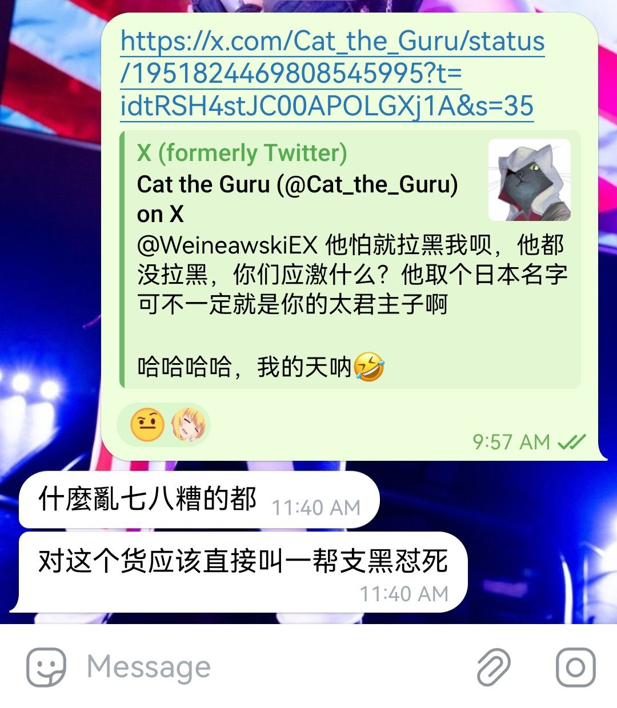

意洵
@lijunyi87429205
@Cat_the_Guru @WeineawskiEX 世上还有不少人恐怕全然不了解”日本战争罪行”反对昭和军国主义日本，确实是有良知和见识的人的一个共识。但那个时代的日本人还有几个在世的？如果你仅以地缘历史去仇恨。那这个对象何必是日本人？有大把比日本更可憎的群体或个体对“中国”这个概念做出过暴行。

Cat the Guru
@Cat_the_Guru
@lijunyi87429205 @WeineawskiEX 反对日本战争罪行是称之为人的基本条件，我给你开开眼，这条日奴应激后向太君汇报，太君回复，出一队汉奸吧
哈哈哈哈哈哈哈
🤣🤣🤣🤣🤣🤣 https://t.co/eIXJKWehKy